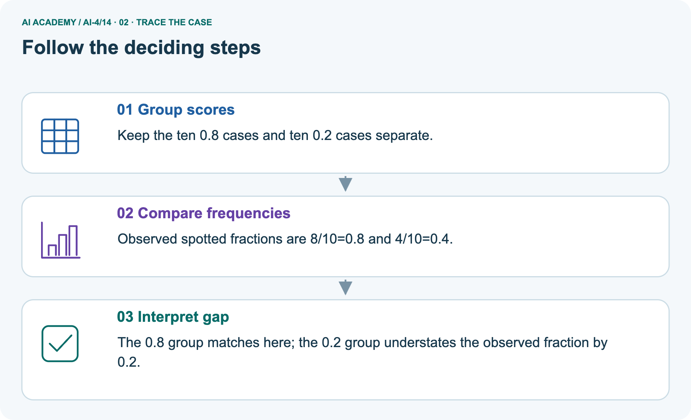
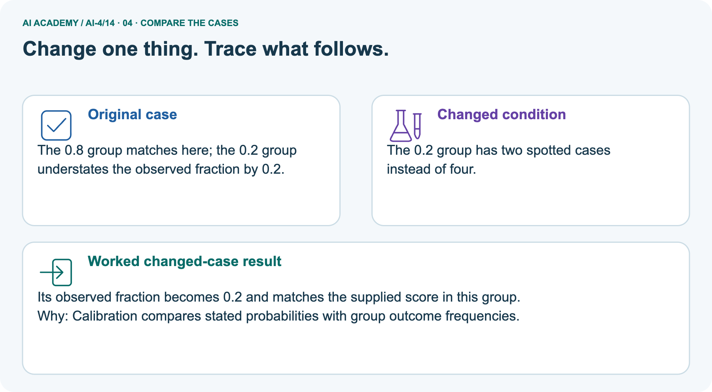
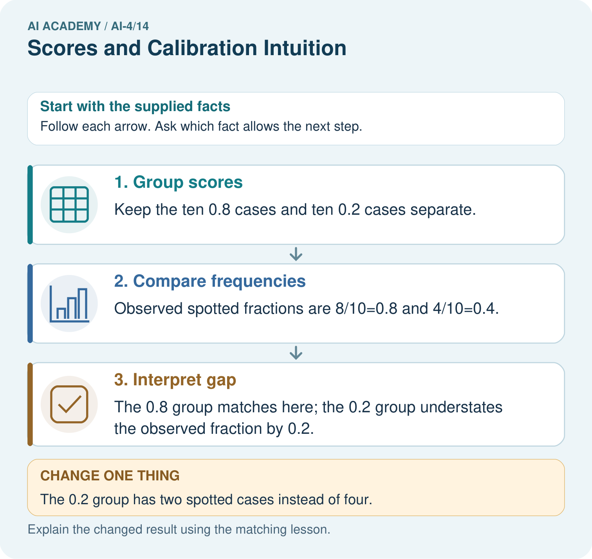
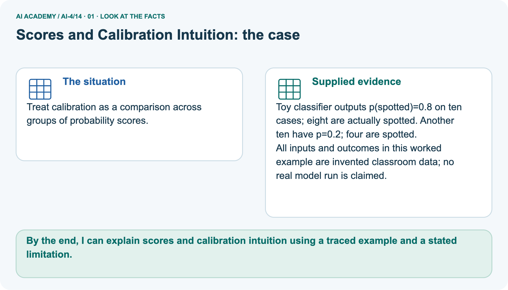
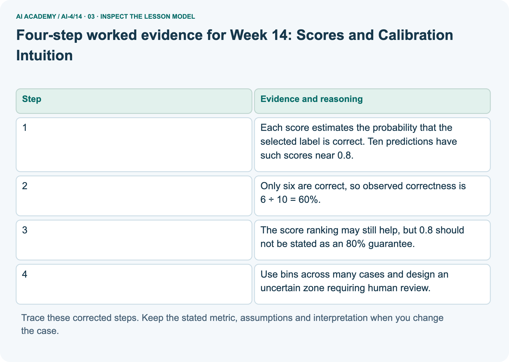
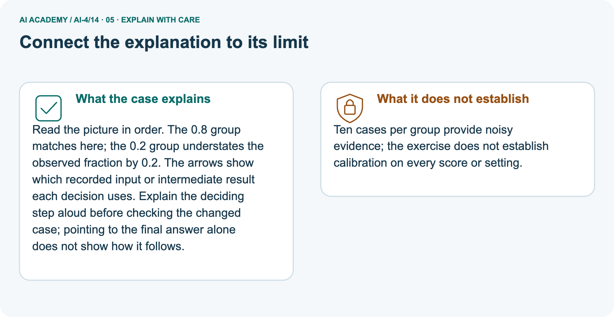
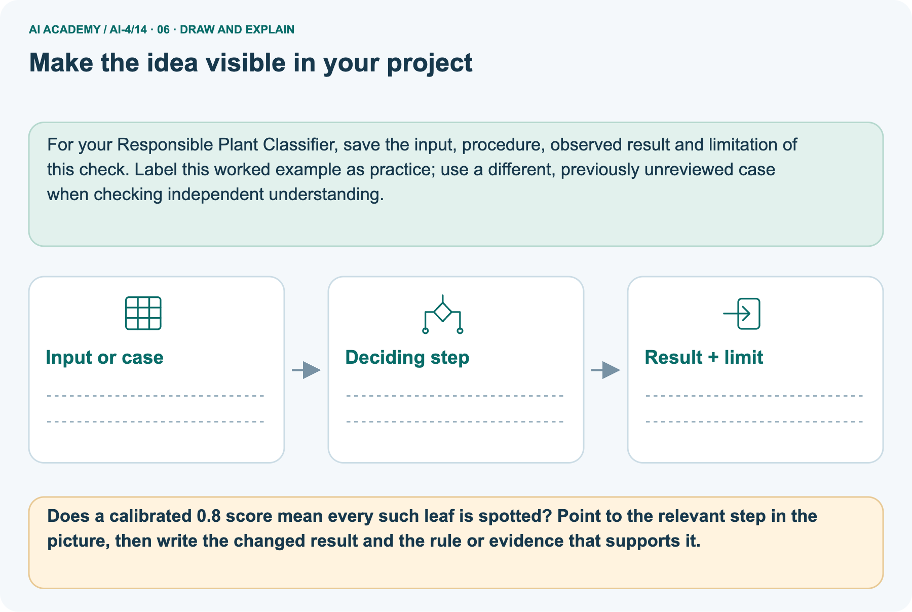

AI Academy · Level 4 · Grade 9 · Week 14 · Student lesson
Scores and Calibration Intuition
Learn to understand, design, build, test and explain AI systems responsibly.
Project: Responsible Plant Classifier
THE CONNECTED WEEK
Name the event. Count the positives. Compare the group.
Interpret probability calibration without confusing it with chosen-label accuracy or individual certainty.
Keep one habit: Score contract → two-group calculation → pictorial contrast → complete thirty-card lab → independent new groups.
Main lesson · Section 1
What event is this score trying to predict?
Interpret calibration only after stating what the probability refers to.
Learning goals
I can interpret calibration using groups of forecasts.
I can compare average predicted probability with observed frequency.
I can distinguish calibration from individual correctness.
Recall prediction, fitting and score meaning
Close your notes first. A rough first answer helps us choose the right starting point; it is not a score for your ability.
Without opening the old lesson, explain one key idea from Train a Classifier. Give an example and a mistake that the idea helps you avoid.
Without opening the old lesson, explain one key idea from Decision Trees. Give an example and a mistake that the idea helps you avoid.
Without opening the old lesson, explain one key idea from Leakage. Give an example and a mistake that the idea helps you avoid.
Does a score necessarily represent a probability?
End goal
By the end, I can explain scores and calibration intuition using a traced example and a stated limitation.
Earlier wording, alternatives and picture transcripts
Your learning target
Remember before reading
After trying, check the relevant lesson or ask your teacher. Change the part of your explanation that the evidence shows was wrong.
A model score can rank predictions without matching the real frequency of correct outcomes.

LEARNING TARGET Twenty cases receive score .7 and fourteen are correct. Explain what the observed rate suggests and what it does not establish about another score group.
Builder name and experiment date:
Readiness for the connected explanation
This week’s end goal
Main lesson · Section 2
Declare the score’s event before making groups
The main lesson uses probability of the positive class, not probability of any chosen label being right.
Score-event contract
| Current score meaning | Correct comparison |
|---|---|
| p(positive), here p(spotted under a toy label rule) | Compare mean predicted p with fraction of reference-positive cases in that score group. |
| p(chosen label is correct), a separate confidence-calibration task | Compare with fraction of selected predictions that were correct; do not substitute this outcome into the positive-class example. |
| Arbitrary model score or neighbour vote share | Do not call it a probability without a justified interpretation and evaluation. |
| Evidence limit | Agreement in a small group is an observation, not a guarantee for an individual, another score bin or a new population. |
Read the group interpretation and fictional scope
If many comparable cases receive probability .8, a calibrated model should produce positives in roughly 80 percent of those cases over adequate data.
It does not mean every case is 80 percent correct or that exactly eight of each next ten must be positive. Calibration is assessed across groups.
Use fictional classroom data throughout this investigation. Keep the task, units, reference labels and data split visible as you reason.
Earlier weeks supplied the model-building process; this week examines calibration as a group property.
Earlier wording, alternatives and picture transcripts
PICTURE ENTRY
Notice → Predict → Explain
Begin with visible evidence; do not explain more than the picture and information support.
MYSTERY The team must use scores and calibration intuition to solve a model-building problem. What information do they have? What important evidence is still missing?
Name three visible details without interpreting them.
Predict the data, model, or evaluation decision being made.
Identify one hidden assumption that could change the result.
State what evidence would confirm or reject your prediction.
My prediction and supporting evidence:
A closer explanation
Main lesson · Section 3
Compare average probability with observed positive frequency
Keep score, outcome count and denominator visible.
Complete two-group supplied example
In a fictional held-out check, ten cases all have predicted probability .2 and two are positive. Another ten all have probability .8 and six are positive.
Average predictions are .2 and .8; observed frequencies are 2/10=.2 and 6/10=.6. The second group is overconfident for positives in this sample.
Optional complete calculation script
groups = [(0.2, 10, 2), (0.8, 10, 6)]
for score, count, positives in groups:
if count == 0:
print("No evidence in this group")
else:
print(score, positives / count)
# Compare each score with its observed fraction.
# A group fraction is not an individual guarantee.Predict the numbers before running
Trace the calculation on paper before running this optional Python check. Use the stated fictional inputs and compare intermediate values. The code checks this example; your independent workbook case uses different evidence.
Earlier wording, alternatives and picture transcripts
ML MECHANISM
Input → Model → Evidence
Trace the information, fitted behavior, and evaluation proof separately.


QUESTION Bin prediction scores and compare average score with observed correctness.
MODEL IDEA A model score can rank predictions without matching the real frequency of correct outcomes.
PROOF NEEDED Use an unseen case, visible calculation, error analysis, and a stated limitation.
UNDER THE HOOD For this example, each score estimates the probability that the selected label is correct. Ten predictions have scores near 0.8; six are correct, so observed correctness is 6/10=60%.
If instead scores mean probability of the spotted class, compare them with the fraction of reference-spotted leaves.
Draw a fresh data → model → prediction → evaluation trace:
A closer explanation
Connect the picture and the explanation
Point to the input, the deciding step and the result in this week’s visual. Explain the same step in ordinary words. A picture helps when you can say what each part represents.
Main lesson · Section 4
Compare a probability statement with the evidence for its meaning
A familiar decimal is not automatically a reliable individual guarantee.
Four evaluation conditions

NORMAL Expected data and expected behavior.

Keep this boundary clear
BOUNDARY Value close to a threshold, ambiguous label, or uncertain prediction.

MISSING Necessary field, label, source, or measurement is unavailable.

SHIFTED New lighting, species, device, subgroup, or time condition.
Keep the claim bounded
RELEASE RULE Passing one case never proves generalization. Predefine expected behavior for all four categories.
Choose a revealing case
Which case most threatens today's claim, and why?
Predict the supplied changed case
Change: The 0.2 group has two spotted cases instead of four.
Check after predicting
Prediction: Its observed fraction becomes 0.2 and matches the supplied score in this group.
Reason: Calibration compares stated probabilities with group outcome frequencies.
Earlier wording, alternatives and picture transcripts
EVALUATION DESIGN
Four Tests, Four Kinds of Evidence
A system is not understood until it survives more than one comfortable example.
NORMAL Expected data and expected behavior.
BOUNDARY Value close to a threshold, ambiguous label, or uncertain prediction.
MISSING Necessary field, label, source, or measurement is unavailable.
SHIFTED New lighting, species, device, subgroup, or time condition.
Change one thing in the pictured case
Main lesson · Section 6
Read both axes and the event behind each count
The positive fraction and classification accuracy can be different.
Complete pictured groups and separate-fixture scope
Treat calibration as a comparison across groups of probability scores.
Toy classifier outputs p(spotted)=0.8 on ten cases; eight are actually spotted. Another ten have p=0.2; four are spotted.
All inputs and outcomes in this worked example are invented classroom data; no real model run is claimed.
The main calculation and picture are different fixtures. Main low group: p=0.2,2positives/10,point(0.2,0.2); main high: p=0.8,6/10,point(0.8,0.6),overstates by0.2 or20percentage points. Picture high: p=0.8,8/10; picture low: p=0.2,4/10,understates by0.2. For a reliability diagram x is mean predicted positive probability and y observed positive fraction; compare with y=x.
Neither example tells whether every chosen class label is correct. Ten cases per group remain noisy evidence.
Trace positive frequencies and gaps



Read the picture one step at a time
Read the picture in order. The 0.8 group matches here; the 0.2 group understates the observed fraction by 0.2. The arrows show which recorded input or intermediate result each decision uses.
Explain the deciding step aloud before checking the changed case; pointing to the final answer alone does not show how it follows.
Predict changing the pictured low-group positives
Change one thing: The 0.2 group has two spotted cases instead of four. Predict the result before checking the explanation. What remains the same?
Check after predicting



Explain individual and sample limits
Ten cases per group provide noisy evidence; the exercise does not establish calibration on every score or setting.
Read the labelled picture: Does a calibrated 0.8 score mean every such leaf is spotted? Point to the relevant step in the picture, then write the changed result and the rule or evidence that supports it.
Return to the original two-group calculation
Calibration as a group property at a glance
Earlier wording, alternatives and picture transcripts
WORKED EVIDENCE
Reason Step by Step
Predict first. Then check each step. A correct answer without visible evidence cannot be audited.
Four-step worked evidence for Week 14: Scores and Calibration Intuition
STEP 1 Each score estimates the probability that the selected label is correct. Ten predictions have such scores near 0.8.
STEP 2 Only six are correct, so observed correctness is 6 ÷ 10 = 60%.
STEP 3 The score ranking may still help, but 0.8 should not be stated as an 80% guarantee.
STEP 4 Use bins across many cases and design an uncertain zone requiring human review.
CHECK Verify the denominator, unit, split, class definition, and data version before interpreting a score.
Recalculate, retrace, or restate the evidence independently:
A closer explanation
Learn from the worked case
Cover the result before checking it. Say what is given, choose the procedure, and follow one step at a time. Then uncover the result and explain your first mismatch. Ask why a step is allowed, not only what number it produces.
A pictorial worked case: Scores and Calibration Intuition
The facts we will use



Why this result follows
What this example does not establish
Main lesson · Section 7
Repair probability-event confusion and test-set reuse
Name what was forecast and what was observed.
Current event-definition clarification
A score0.2for the positive class does not mean20% of chosen negative predictions should be correct. For example, if a negative label were chosen at threshold0.5, compare correctness with the chosen-label event instead. State that event and policy explicitly. A gap found in one small bin does not justify changing predictions on those same final-test records and calling the resulting fit an independent success.
Inspect sample and final-test limitations
Bin boundaries, group sizes and dataset coverage affect the picture. Do not fit adjustments on the final test or claim certainty from a small bin.
Real distributions can change, and a calibrated model on one population may not remain so elsewhere.
Challenge the individual guarantee
Diagnose one cause and name the cleanest next experiment:
CLAIM TO CHALLENGE A score of 0.9 means the prediction has exactly a 90% chance of being correct.
Earlier wording, alternatives and picture transcripts
ERROR DETECTIVE
Compare → Diagnose → Repair
Do not patch the answer. Find the earliest unsupported assumption, data problem, or experiment error.

| Evidence record | Expected | Actual | Likely cause / next test |
|---|---|---|---|
| normal case | passes | ||
| boundary case | defined behavior | ||
| missing case | safe fallback | ||
| shifted case | measured limit |
A closer explanation
Main lesson · Section 8
Practise the group discrepancy with less help
A matched frequency is different from useful ranking.
Try W2 with the original two groups
Use workbook W2 for the connected example “Calibration as a group property”. First fill the input and rule boxes. Try the middle steps before asking for a hint. After a hint, try the next step yourself.
| Plan | Do | Check |
|---|---|---|
| What is given? Which rule or procedure applies? | Record each intermediate step. | Does the result follow? What remains unknown? |
Explain your trace to a partner. Your partner points to one step to check. Swap roles on the next case. Each person writes their own explanation.
Separate calibration, ranking and adjustment data
If every case gets .5 and exactly half are positive, overall calibration can look good while the model cannot rank easy and difficult cases. Conversely, useful ranking can coexist with poor probabilities.
Report discrimination and calibration separately. Fit any calibration adjustment on development data reserved for that purpose, then evaluate on separate data.
Explain a claim with its source and denominator
Use the worked case for Calibration as a group property. Proposed explanation: “A final answer is enough”. Decide whether this explanation is supported.
Point to the step or supplied fact that decides; explain your repair if needed.
Answer on your own before discussion. If you are unsure, say which step you need help with.
Explain the pictured probability limit
Does a calibrated 0.8 score mean every such leaf is spotted? Point to the relevant step in the picture, then write the changed result and the rule or evidence that supports it.
Reserve the new independent groups
This is supported practice. Keep the separately named independent case for an attempt before feedback.
Earlier wording, alternatives and picture transcripts
ML STUDIO
Specify Before You Run
A trustworthy result can be reproduced from the recorded data, code, settings, and evaluation rule.

Experiment record
QUESTION + intended use + success threshold
DATA version + grouped split + leakage check
CODE/preprocessing + features + model + settings + seed
METRICS + positive class + units + denominators
PREDICTIONS + errors + subgroup slices + limitations
HUMAN reviewer + release, revise, limit, or stop decision
Write the minimum record needed to reproduce today's result:
A closer explanation
Practise with less help: Locate the discrepancy
Check your reasoning
Explain the picture
Main lesson · Section 9
Run Reliability Lab with every promised record supplied
Use observed positive outcomes consistently across all three bins.
Complete thirty fictional score/outcome cards
| Case ID | Supplied p(positive) | Observed positive? 1=yes,0=no |
|---|---|---|
| L01 | 0.2 | 1 |
| L02 | 0.2 | 1 |
| L03 | 0.2 | 0 |
| L04 | 0.2 | 0 |
| L05 | 0.2 | 0 |
| L06 | 0.2 | 0 |
| L07 | 0.2 | 0 |
| L08 | 0.2 | 0 |
| L09 | 0.2 | 0 |
| L10 | 0.2 | 0 |
| M01 | 0.5 | 1 |
| M02 | 0.5 | 1 |
| M03 | 0.5 | 1 |
| M04 | 0.5 | 1 |
| M05 | 0.5 | 1 |
| M06 | 0.5 | 1 |
| M07 | 0.5 | 1 |
| M08 | 0.5 | 0 |
| M09 | 0.5 | 0 |
| M10 | 0.5 | 0 |
| H01 | 0.8 | 1 |
| H02 | 0.8 | 1 |
| H03 | 0.8 | 1 |
| H04 | 0.8 | 1 |
| H05 | 0.8 | 1 |
| H06 | 0.8 | 1 |
| H07 | 0.8 | 0 |
| H08 | 0.8 | 0 |
| H09 | 0.8 | 0 |
| H10 | 0.8 | 0 |
Declare endpoints and trace counts
| Declared bin | Membership rule | Current mean / positive frequency |
|---|---|---|
| Low | 0<=p<0.35 | 10cases;mean0.2;2/10=0.2 |
| Middle | 0.35<=p<0.65 | 10cases;mean0.5;7/10=0.7;understates by0.2 |
| High | 0.65<=p<=1 | 10cases;mean0.8;6/10=0.6;overstates by0.2 |
Normal, exact-endpoint, missing and changed-population probes
| Complete probe | Expected bounded check |
|---|---|
| Normal thirty-record fixture | Low(0.2,0.2),middle(0.5,0.7),high(0.8,0.6); all denominators10. |
| Boundary p=0.35,observed positive1 | Belongs to middle under declared endpoints; this is a separate probe, not an extra main-fixture row. |
| Missing group with0cases | No observed rate; do not plot0/0as zero. Missing reference outcome also cannot be treated as observed negative. |
| Changed population:10outdoor cases p=0.8with3positives | Observed0.3,gap0.5in this separate tiny sample; original indoor-like evidence cannot certify this setting. |
Sort, calculate and interpret
Reliability Lab: sort all thirty supplied records under the declared endpoints, count positives and compute the mean probability in each bin. Plot mean score horizontally and observed positive fraction vertically, annotate count10beside each point, and compare with the equality line. Predict before running the optional complete calculation.
Explain the middle understatement and high overstatement as sample discrepancies, not individual truths. No calibration adjustment or classifier is trained here. Keep the new0.3/0.7independent groups for an uncoached attempt.
Optional complete binning program
# Fictional score p(positive), observed binary outcome. Bins declared in advance.
rows = [(f'L{i:02}', 0.2, int(i <= 2)) for i in range(1, 11)]
rows += [(f'M{i:02}', 0.5, int(i <= 7)) for i in range(1, 11)]
rows += [(f'H{i:02}', 0.8, int(i <= 6)) for i in range(1, 11)]
bins = [('low', 0.0, 0.35), ('middle', 0.35, 0.65), ('high', 0.65, 1.0)]
for name, left, right in bins:
selected = [(p, y) for item_id, p, y in rows
if left <= p and (p < right or right == 1.0 and p <= right)]
if not selected:
print(name, 'no observations')
continue
mean_score = sum(p for p, y in selected) / len(selected)
positives = sum(y for p, y in selected)
frequency = positives / len(selected)
print(name, len(selected), round(mean_score, 3), positives, round(frequency, 3))
# These groups describe p(positive), not the correctness rate of chosen labels.
# No calibrator is fitted, and no population guarantee follows from ten cases/bin.
Keep evidence and actual execution status
| Case | Prediction | Actual | Calculation / evidence | Meaning / next test |
|---|---|---|---|---|
| Normal | ||||
| Boundary | ||||
| Missing | ||||
| Shifted |
Before trying: what do I expect, and why? While trying: which step could first go wrong? Afterwards: what did I actually observe, and what should change? Keep “not run” if you only traced the procedure.
Earlier wording, alternatives and picture transcripts
EVIDENCE LAB
Predict → Run → Calculate → Interpret
Keep the test conditions fixed, record every result, and change only one planned factor.

1. Write the hypothesis and expected evidence before running.
2. Reliability Lab: sort thirty supplied p(positive) predictions into declared score bins, calculate observed positive frequency and identify sample discrepancies. Keep this distinct from chosen-label correctness.
3. Run one normal, one boundary, one missing, and one shifted case.
4. Calculate the metric from raw counts or row-level errors.
5. Interpret what changed, what did not, and what remains unsafe or unknown.
Plan → try → check
Main lesson · Section 14
Try alone: interpret two new probability groups
State the score’s event, both points and the direction of each sample gap.
Complete independent facts and scope
Twenty cases all predict .3 with eight positives; ten all predict .7 with seven positives. Give plot points and interpret.
In this selected task the scores mean p(positive). Positive outcomes are the supplied counts, not counts of correct chosen labels. Plot group mean probability on x and observed positive frequency on y; show the two denominators and state the limited evidence. No per-case prediction decision rule, global calibration test or future guarantee is supplied.
First attempt and support record
Attempt this case before feedback. Record any help. Earlier examples below are further practice; a case already practised with feedback cannot establish fresh transfer.
Your teacher has the independent answer and scoring criteria. Complete the matching workbook week to keep your practice evidence together.
Use feedback after trying
Attempt the independent case before hints. Record whether you worked alone, used a hint or followed a model. After feedback, fix the first unsupported step and explain why it changed.
A later check uses a changed case, not a copied answer.
Earlier wording, alternatives and picture transcripts
Independent case: Apply independently
Week 14 Independent application
Close the worked explanation. Apply the idea to this different question without copying.
Among 20 predictions with score 0.8, 12 are correct. What is observed accuracy in this group and how does it compare with 0.8?
My answer, with a trace, calculation or supporting evidence
Create and test
Change one relevant detail. Predict the result before testing. Include a boundary or missing-information case when it helps reveal a limit.
My changed input and expected result
Connect to your project
Add an uncertainty band to the Plant Classifier and define what the interface says when scores fall inside it.
The evidence I will keep
Transfer practice from the original programme
Twenty cases receive score .7 and fourteen are correct. Explain what the observed rate suggests and what it does not establish about another score group.
Use feedback to improve
Main lesson · Section 11
Keep score meaning beside the project’s review policy
Do not turn a toy reliability check into a validated uncertainty claim.
Project score record and limits
THIS WEEK'S CHECKPOINT Add an uncertainty band to the Plant Classifier and define what the interface says when scores fall inside it.
Define the score event and reference label first. Save score-bin rules, counts, mean probabilities, observed frequencies and the data/version/condition context. A proposed review band is a development policy requiring its own justification; low positive probability need not mean high uncertainty, and a score near0.5does not by itself measure every uncertainty.
Do not fit a calibrator or review threshold on final-test outcomes and then report an independent final success. Record calibration adjustment as not performed in this lesson.
For your Responsible Plant Classifier, save the input, procedure, observed result and limitation of this check.
Label this worked example as practice; use a different, previously unreviewed case when checking independent understanding.
Evidence, uncertainty and human decision
Which requirement or risk does this artifact address?
Which dataset, split, code, and metric version does it use?
What normal and shifted cases were tested?
What remains uncertain or weak?
What decision still belongs to a teacher or qualified human?
RESPONSIBLE RELEASE Never use this classroom prototype for medical, pesticide, agricultural, or other consequential decisions.
My evidence-linked project decision:
Earlier wording, alternatives and picture transcripts
CUMULATIVE PROJECT
Responsible Plant Classifier
Every week adds one reviewable artifact to the same evidence-based capstone.

Evidence for your project
Main lesson · Section 16
Finish by naming the event, the bin and the denominator
Explain why a matched group does not make every individual outcome certain.
Retrieve and explain
Close your notes. Explain this goal in your own words: Interpret calibration using groups of forecasts
Plan a changed-case return
If you are unsure, return to the worked picture and explain one arrow. If you are ready, change an input or assumption and justify your prediction.
Save your workbook evidence. At the next review, try a different case before opening your old answer.
Reference bank and extra practice
Choose the reference that helps your next step.
Reference · Words for the current experiment
Reference · Section 5
Reference · Words for the current experiment
Tie each word to a particular input, fitted choice or evidence record.
Core vocabulary
| Term | Precise meaning | My ML example |
|---|---|---|
| score | model value used for ranking or confidence | |
| calibration | scores align with observed frequencies | |
| bin | group of predictions with similar scores | |
| reliability | agreement between score and outcome rate |
Closer-explanation terms
| Word | Meaning |
|---|---|
| Calibration | Agreement between predicted probabilities and outcome frequencies across comparable groups |
| Bin | A declared interval grouping predictions |
| Observed frequency | Positive outcomes divided by cases in a group |
| Reliability diagram | A plot comparing group average prediction with observed frequency |
Earlier wording, alternatives and picture transcripts
VOCABULARY
Words You Can Calculate and Defend
A definition matters when it lets you interpret a new dataset, model, or result.


MISCONCEPTION TO REPAIR A score of 0.9 means the prediction has exactly a 90% chance of being correct.
Repair the claim using a definition, calculation, or test record:
Words used in the closer explanation
Extra challenge · Build a stronger explanation
Reference · Section 10
Extra challenge · Build a stronger explanation
Choose the next useful challenge after the main route.
Thinking ladder
DEFINE Use all four terms precisely: score, calibration, bin, reliability.
CALCULATE Reproduce the worked evidence with units and denominator.
TRACE Explain the data, code or decision path.
DIAGNOSE A score of 0.9 means the prediction has exactly a 90% chance of being correct.
TRANSFER Solve a fresh dataset or model case.
IMPROVE Change one cause and rerun fixed evidence.
DEFEND State intended use, metric, limitation, and human responsibility.
MASTERY RULE A coached calculation becomes mastery only after a different case is completed independently.
Earlier wording, alternatives and picture transcripts
MASTERY
From Knowing the Word to Owning the Idea
Move upward only when you can produce evidence without copying the example.

Reference · Inspect your evidence
Reference · Section 12
Reference · Inspect your evidence
Use after practice; keep the fresh two-group positive-probability interpretation task for the individual attempt.
Experiment evidence checklist
□ Define the task, feature/target roles, and intended-use boundary.
□ Show the calculation, code trace, or experiment record.
□ Test a normal case and one revealing boundary, missing, or shifted case.
□ Diagnose one failure without changing several factors at once.
□ Name a limitation, fairness concern, and the human-review action.
Independent evidence and defense:
My level: □ Not yet □ With one hint □ Independently □ I can teach and defend it
Earlier wording, alternatives and picture transcripts
INDEPENDENT PROOF
Explain • Calculate • Transfer • Defend
Complete this with a fresh case after guided practice and compare it with the mastery criteria.

REQUIRED PROOF Bin prediction scores and compare average score with observed correctness.
NEXT BRIDGE Carry the experiment evidence into: Confusion Matrix.
Extra practice · Earlier complete case
Reference · Section 13
Extra practice · Earlier complete case
Attempt the question before opening its worked explanation.
Situation and question
Ten cases receive probability .8 for spotted; eight are spotted.
Interpret calibration and its limits.
Your explanation
Which detail supports the answer, and why does it matter?
Check after trying
8/10 matches .8 in this tiny bin. It illustrates calibration, not proof of global calibration or individual certainty; test more bins and data.
| Evidence or stage | Value or result |
|---|---|
| Spotted among score-0.8 cases | 8/10 |
Earlier wording, alternatives and picture transcripts
Week 14 Worked case
Use the supplied details to practise the weekly concept before attempting the independent question. This case extends the illustrated lesson.
The situation
The question
Worked explanation
Explain it in your own words
Trace the supplied case visually
Compare a score bin with observed frequency
Ten cases receive probability .8 for spotted; eight are spotted.
Interpret calibration and its limits.
8/10 matches .8 in this tiny bin. It illustrates calibration, not proof of global calibration or individual certainty; test more bins and data.
Reference · Earlier route checklist
Reference · Section 15
Reference · Earlier route checklist
Use one main route; revisit the checklist only when useful.
Checklist and first prediction
| By the end, I can | How I will show it |
|---|---|
| Interpret calibration using groups of forecasts | Explain the deciding step, show a trace or test, and state one limit. |
| Compare average predicted probability with observed frequency | Explain the deciding step, show a trace or test, and state one limit. |
| Distinguish calibration from individual correctness | Explain the deciding step, show a trace or test, and state one limit. |
Remember → watch and explain → try with help → investigate → try independently → keep project evidence. Your teacher may spread this lesson across several classes.
Keep your first prediction. Compare it with what the evidence shows and explain any change.
Earlier wording, alternatives and picture transcripts
Start with this question: Treat calibration as a comparison across groups of probability scores.
Extra practice · Predict, check and repair
Reference · Section 17
Extra practice · Predict, check and repair
Keep supported feedback separate from the reserved independent case.
First supported question and hint
Treat calibration as a comparison across groups of probability scores.
Which labelled step matches this detail? The 0.8 group matches here; the 0.2 group understates the observed fraction by 0.2.
1. Group scores
2. Compare frequencies
3. Interpret gap
Hint if needed: Read the steps in the pictorial case. Match the supplied detail to the stage that performs or records it.
Practice 1: explain the deciding evidence
Check the first explanation
After your attempt, compare with the supported explanation: Interpret gap The 0.8 group matches here; the 0.2 group understates the observed fraction by 0.2. Read the picture in order.
The 0.8 group matches here; the 0.2 group understates the observed fraction by 0.2. The arrows show which recorded input or intermediate result each decision uses.
Explain the deciding step aloud before checking the changed case; pointing to the final answer alone does not show how it follows.
Changed-case question and hint
Changed-case practice: The 0.2 group has two spotted cases instead of four. Which conclusion is supported by the supplied facts?
1. Its observed fraction becomes 0.2 and matches the supplied score in this group.
2. This one example guarantees correct results for every future input.
3. We can decide the result without examining the changed input or the procedure.
Hint if needed: Use the changed condition and the deciding step in the pictorial trace. The answer must say what follows from those facts.
Practice 2: explain the deciding evidence
Check the changed explanation
After your attempt, compare with the supported explanation: Its observed fraction becomes 0.2 and matches the supplied score in this group. Calibration compares stated probabilities with group outcome frequencies.
Repair and keep the record
Review Train a Classifier (ai-4/13). Goal: Connect training-only scaling and neighbour prediction in one pipeline. Short practice: Which pipeline record would help another team reproduce the result?
Point to the relevant step in the picture, then write the changed result and the rule or evidence that supports it.. Return to this week and explain what you changed.
Review Decision Trees (ai-4/11). Goal: Fit a root question and leaf predictions from training examples. Short practice: Which input distinguishes the original and changed tree?
Point to the relevant step in the picture, then write the changed result and the rule or evidence that supports it.. Return to this week and explain what you changed.
Review Leakage (ai-4/8). Goal: Choose a split unit that matches the intended prediction claim. Short practice: How many independently new plant identities are in the original test?
Point to the relevant step in the picture, then write the changed result and the rule or evidence that supports it.. Return to this week and explain what you changed.
The browser lab lets you edit the supported Python examples already included in this lesson. Predict first, run, inspect the actual output or error, change one input, then run again.
Keep code, predictions, actual results and a reasoned revision together. On paper, label your result as a trace rather than an execution.
Use Download completed work in the hosted lesson to export your answers, reflections, practice feedback and code-run evidence. Open the HTML copy to read or print it.
Drafts stay in this browser when storage is available; clear drafts on a shared device.
Earlier wording, alternatives and picture transcripts
Use this supported practice once, in the browser or on paper. Keep the reserved independent assessment for a separate first attempt before teacher feedback.
Repair a missing building block
Predict, run and debug
Keep your completed work
Reference · The six-picture journey
Reference · Section 18
Reference · The six-picture journey
Choose the picture needed for the current question.
01. Scores and Calibration Intuition: the case



Treat calibration as a comparison across groups of probability scores. Supplied facts: Toy classifier outputs p(spotted)=0.8 on ten cases; eight are actually spotted. Another ten have p=0.2; four are spotted.
All inputs and outcomes in this worked example are invented classroom data; no real model run is claimed.
Point to the given fact that matters most. Explain why it matters.
02. Follow the deciding steps
Group scores: Keep the ten 0.8 cases and ten 0.2 cases separate. → Compare frequencies: Observed spotted fractions are 8/10=0.8 and 4/10=0.4. → Interpret gap: The 0.8 group matches here; the 0.2 group understates the observed fraction by 0.2.
Point to each numbered stage and explain which recorded input it uses.
03. Four-step worked evidence for Week 14: Scores and Calibration Intuition



Four-step worked evidence for Week 14: Scores and Calibration Intuition. 1 | Each score estimates the probability that the selected label is correct.
Ten predictions have such scores near 0.8.. 2 | Only six are correct, so observed correctness is 6 ÷ 10 = 60%.. 3 | The score ranking may still help, but 0.8 should not be stated as an 80% guarantee.. 4 | Use bins across many cases and design an uncertain zone requiring human review.
Read the labels and values. Explain the relationship the model shows.
04. Change one thing. Trace what follows.
Original case: The 0.8 group matches here; the 0.2 group understates the observed fraction by 0.2. Changed condition: The 0.2 group has two spotted cases instead of four.
Expected result: Its observed fraction becomes 0.2 and matches the supplied score in this group. Reason: Calibration compares stated probabilities with group outcome frequencies.
Predict before checking the worked changed-case result. Name what changed and what the supplied facts allow you to conclude.
05. Connect the explanation to its limit



Read the picture in order. The 0.8 group matches here; the 0.2 group understates the observed fraction by 0.2. The arrows show which recorded input or intermediate result each decision uses.
Explain the deciding step aloud before checking the changed case; pointing to the final answer alone does not show how it follows.
Limit: Ten cases per group provide noisy evidence; the exercise does not establish calibration on every score or setting.
Explain the case, then point to a limit on the claim.
06. Make the idea visible in your project



For your Responsible Plant Classifier, save the input, procedure, observed result and limitation of this check.
Label this worked example as practice; use a different, previously unreviewed case when checking independent understanding. Draw your input, deciding step, result and limit.
Supported question: Does a calibrated 0.8 score mean every such leaf is spotted? Point to the relevant step in the picture, then write the changed result and the rule or evidence that supports it.
Draw your project trace and justify the deciding step using evidence.